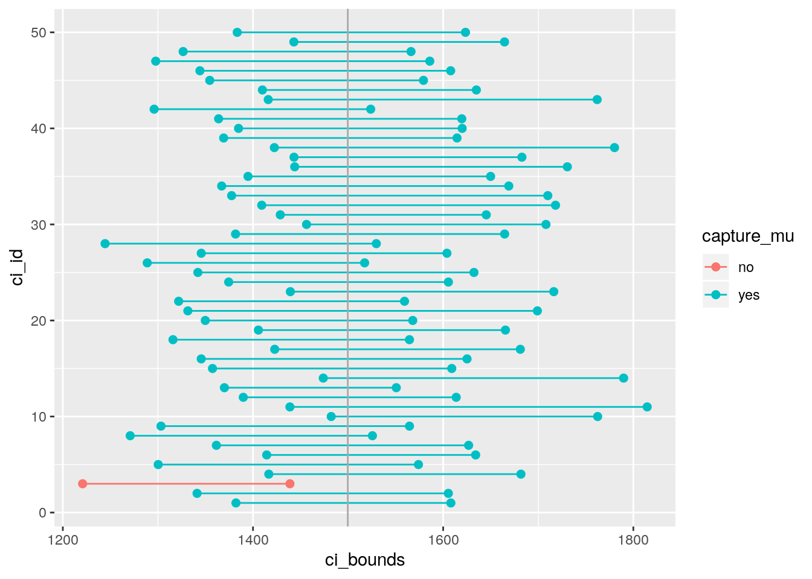
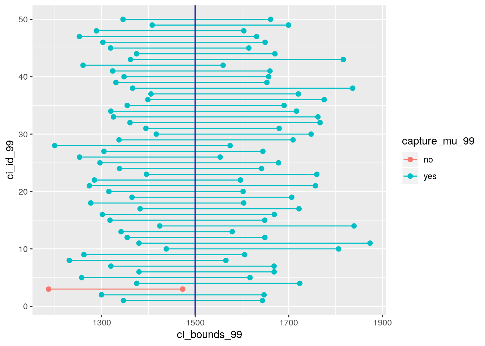

2 Week 2
Week 2 covers calculating confidence intervals. Below is the activity.
Complete all Exercises, and submit answers to Questions on the Coursera platform.
If you have access to data on an entire population, say the size of every house in Ames, Iowa, it’s straight forward to answer questions like, “How big is the typical house in Ames?” and “How much variation is there in sizes of houses?”. If you have access to only a sample of the population, as is often the case, the task becomes more complicated. What is your best guess for the typical size if you only know the sizes of several dozen houses? This sort of situation requires that you use your sample to make inference on what your population looks like.
Setting a seed: We will take some random samples and calculate confidence based on these samples in this lab, which means you should set a seed on top of your lab. If this concept is new to you, review the previous lab and ask your TA.
Setting a seed will cause R to sample the same sample each time you knit your document. This will make sure your results don’t change each time you knit, and it will also ensure reproducibility of your work (by setting the same seed it will be possible to reproduce your results). You can set a seed like this:
set.seed(19122018) # my seedThe number above is completely arbitraty. If you need inspiration, you can use your ID, birthday, or just a random string of numbers. The important thing is that you use each seed only once. You only need to do this once in your R Markdown document, but make sure it comes before sampling.
2.1 Getting Started
2.1.1 Load packages
In this lab we will explore the data using the dplyr package and visualize it using the ggplot2 package for data visualization. The data can be found in the companion package for this course, statsr.
Let’s load the packages.
library(statsr)
library(dplyr)
library(ggplot2)2.1.2 The data
We consider real estate data from the city of Ames, Iowa. This is the same dataset used in the previous lab. The details of every real estate transaction in Ames is recorded by the City Assessor’s office. Our particular focus for this lab will be all residential home sales in Ames between 2006 and 2010. This collection represents our population of interest. In this lab we would like to learn about these home sales by taking smaller samples from the full population. Let’s load the data.
data(ames)In this lab we’ll start with a simple random sample of size 60 from the population. Specifically, this is a simple random sample of size 60. Note that the data set has information on many housing variables, but for the first portion of the lab we’ll focus on the size of the house, represented by the variable area.
n <- 60
samp <- sample_n(ames, n)Exercise: Describe the distribution of homes in your sample. What would you say is the “typical” size within your sample? Also state precisely what you interpreted “typical” to mean.
Answer: Typical size between 1000 and 1500 as it seems to be a bi-modal distribution.‘Typical’ meaning size which is more frequent.
# type your code for the Exercise here, and Knit
ggplot(samp, aes(x = area)) + geom_histogram(binwidth = 320)- True or False: My distribution should be similar to others’ distributions who also collect random samples from this population, but it is likely not exactly the same since it’s a random sample.
- True.
- False.
2.2 Confidence intervals
Return for a moment to the question that first motivated this lab: based on this sample, what can we infer about the population? Based only on this single sample, the best estimate of the average living area of houses sold in Ames would be the sample mean, usually denoted as \(\bar{x}\) (here we’re calling it x_bar). That serves as a good point estimate but it would be useful to also communicate how uncertain we are of that estimate. This uncertainty can be quantified using a confidence interval.
A confidence interval for a population mean is of the following form \[ \bar{x} \pm z^\star \frac{s}{\sqrt{n}} \]
You should by now be comfortable with calculating the mean and standard deviation of a sample in R. And we know that the sample size is 60. So the only remaining building block is finding the appropriate critical value for a given confidence level. We can use the qnorm function for this task, which will give the critical value associated with a given percentile under the normal distribution. Remember that confidence levels and percentiles are not equivalent. For example, a 95% confidence level refers to the middle 95% of the distribution, and the critical value associated with this area will correspond to the 97.5th percentile.
We can find the critical value for a 95% confidence interal using
z_star_95 <- qnorm(0.975)
z_star_95## [1] 1.959964which is roughly equal to the value critical value 1.96 that you’re likely familiar with by now.
Let’s finally calculate the confidence interval:
samp %>%
summarise(lower = mean(area) - z_star_95 * (sd(area) / sqrt(n)),
upper = mean(area) + z_star_95 * (sd(area) / sqrt(n)))## # A tibble: 1 x 2
## lower upper
## <dbl> <dbl>
## 1 1403. 1631.To recap: even though we don’t know what the full population looks like, we’re 95% confident that the true average size of houses in Ames lies between the values lower and upper. There are a few conditions that must be met for this interval to be valid.
- For the confidence interval to be valid, the sample mean must be normally distributed and have standard error \(s / \sqrt{n}\). Which of the following is not a condition needed for this to be true?
- The sample is random.
- The sample size, 60, is less than 10% of all houses.
- The sample distribution must be nearly normal.
2.3 Confidence levels
- What does “95% confidence” mean?
- 95% of the time the true average area of houses in Ames, Iowa, will be in this interval.
- 95% of random samples of size 60 will yield confidence intervals that contain the true average area of houses in Ames, Iowa.
- 95% of the houses in Ames have an area in this interval.
- 95% confident that the sample mean is in this interval.
In this case we have the rare luxury of knowing the true population mean since we have data on the entire population. Let’s calculate this value so that we can determine if our confidence intervals actually capture it. We’ll store it in a data frame called params (short for population parameters), and name it mu.
params <- ames %>%
summarise(mu = mean(area))Exercise: Does your confidence interval capture the true average size of houses in Ames?
# type your code for the Exercise here, and Knit
# Yes, the true mean is contained within the confidence interval.- What proportion of 95% confidence intervals would you expect to capture the true population mean?
- 1%
- 5%
- 95%
- 99%
Using R, we’re going to collect many samples to learn more about how sample means and confidence intervals vary from one sample to another.
Here is the rough outline:
- Obtain a random sample.
- Calculate the sample’s mean and standard deviation, and use these to calculate and store the lower and upper bounds of the confidence intervals.
- Repeat these steps 50 times.
We can accomplish this using the rep_sample_n function. The following lines of code takes 50 random samples of size n from population (and remember we defined \(n = 60\) earlier), and computes the upper and lower bounds of the confidence intervals based on these samples.
set.seed(19122018);
ci <- ames %>%
rep_sample_n(size = n, reps = 50, replace = TRUE) %>%
summarise(lower = mean(area) - z_star_95 * (sd(area) / sqrt(n)),
upper = mean(area) + z_star_95 * (sd(area) / sqrt(n)), samplemeans.95 = mean(area))Let’s view the first five intervals:
#set.seed(19122018);
ci %>%
slice(1:5)## # A tibble: 5 x 4
## replicate lower upper samplemeans.95
## <int> <dbl> <dbl> <dbl>
## 1 1 1382. 1608. 1495.
## 2 2 1341. 1605. 1473.
## 3 3 1221. 1439. 1330.
## 4 4 1417. 1682. 1549.
## 5 5 1300. 1574. 1437.Next we’ll create a plot similar to Figure 4.8 on page 175 of OpenIntro Statistics, 3rd Edition. First step will be to create a new variable in the ci data frame that indicates whether the interval does or does not capture the true population mean. Note that capturing this value would mean the lower bound of the confidence interval is below the value and upper bound of the confidence interval is above the value. Remember that we create new variables using the mutate function.
#set.seed(19122018)
ci <- ci %>%
mutate(capture_mu = ifelse(lower < params$mu & upper > params$mu, "yes", "no"))The ifelse function is new. It takes three arguments: first is a logical statement, second is the value we want if the logical statement yields a true result, and the third is the value we want if the logical statement yields a false result.
We now have all the information we need to create the plot, but we need to re-organize our data a bit for easy plotting. Specifically, we need to organize the data in a new data frame where each row represents one bound, as opposed to one interval. So this
lower upper capture_mu
1 1350.540 1544.360 yes
2 1333.441 1584.425 yes
3 1412.133 1663.801 yes
...should instead look like
ci_id ci_bounds capture_mu
1 1 1350.540 yes
2 2 1333.441 yes
3 3 1412.133 yes
4 1 1544.360 yes
5 2 1584.425 yes
6 3 1663.801 yes
...We can accomplish this using the following:
set.seed(19122018)
ci_data <- data.frame(ci_id = c(1:50, 1:50),
ci_bounds = c(ci$lower, ci$upper),
capture_mu = c(ci$capture_mu, ci$capture_mu))And finally we can create the plot using the following:
#set.seed(19122018)
ggplot(data = ci_data, aes(x = ci_bounds, y = ci_id,
group = ci_id, color = capture_mu)) +
geom_point(size = 2) + # add points at the ends, size = 2
geom_line() + # connect with lines
geom_vline(xintercept = params$mu, color = "darkgray") # draw vertical line
2.4 How set.seed() works - testing?
set.seed(111112)
ci.95 <- ames %>%
rep_sample_n(size = n, reps = 50, replace = TRUE) %>%
summarise(samplemeans.95 = mean(area))head(ci.95)## # A tibble: 6 x 2
## replicate samplemeans.95
## <int> <dbl>
## 1 1 1526.
## 2 2 1474.
## 3 3 1492.
## 4 4 1473.
## 5 5 1446.
## 6 6 1483.set.seed(111112)
ci.99 <- ames %>%
rep_sample_n(size = n, reps = 50, replace = TRUE) %>%
summarise(samplemeans.99 = mean(area))head(ci.99)## # A tibble: 6 x 2
## replicate samplemeans.99
## <int> <dbl>
## 1 1 1526.
## 2 2 1474.
## 3 3 1492.
## 4 4 1473.
## 5 5 1446.
## 6 6 1483.Exercise: What proportion of your confidence intervals include the true population mean? Is this proportion exactly equal to the confidence level? If not, explain why.
Answer: It is almost all of the CIs = 98% include the true population mean except 1 sample. The proportion is not exactly equal to the confidence level because the confidence interval only provides a plausible range within which the mean is captured. BY definition, we are 95% confident, but results might vary based on how the samples are randonly selected. This is an overestimation of the 95% CI sampling.
- What is the appropriate critical value for a 99% confidence level?
- 0.01
- 0.99
- 1.96
- 2.33
- 2.58
# type your code for the Question 5 here, and Knit
set.seed(19122018)
z_star_99 <- qnorm(0.995)
z_star_99## [1] 2.575829Exercise: Calculate 50 confidence intervals at the 99% confidence level. You do not need to obtain new samples, simply calculate new intervals based on the 95% confidence interval endpoints you had already collected. Plot all intervals and calculate the proportion of intervals that include the true population mean.
# type your code for the Exercise here, and Knit
set.seed(19122018)
#samples for 99% confidence interval
ci_99 <- ames %>%
rep_sample_n(size = n ,reps = 50, replace = TRUE) %>%
summarise(lower = mean(area) - z_star_99 * (sd(area) / sqrt(n)),
upper = mean(area) + z_star_99 * (sd(area) / sqrt(n)), samplemeans.99 = mean(area))
#assignment of capture
ci_99 <- ci_99 %>%
mutate(capture_mu_99 = ifelse(lower < params$mu & upper > params$mu, "yes", "no"))
#datagrame for plot
ci_data_99 <- data.frame(ci_id_99 = c(1:50, 1:50),
ci_bounds_99 = c(ci_99$lower, ci_99$upper),
capture_mu_99 = c(ci_99$capture_mu_99, ci_99$capture_mu_99))
#plot
ggplot(data = ci_data_99, aes(x = ci_bounds_99, y = ci_id_99,
group = ci_id_99, color = capture_mu_99)) +
geom_point(size = 2) + # add points at the ends, size = 2
geom_line() + # connect with lines
geom_vline(xintercept = params$mu, color = "darkblue") # draw vertical line
ci_99 %>%
slice(1:5)## # A tibble: 5 x 5
## replicate lower upper samplemeans.99 capture_mu_99
## <int> <dbl> <dbl> <dbl> <chr>
## 1 1 1347. 1644. 1495. yes
## 2 2 1300. 1647. 1473. yes
## 3 3 1187. 1473. 1330. no
## 4 4 1375. 1723. 1549. yes
## 5 5 1257. 1617. 1437. yes```
- We would expect 99% of the intervals to contain the true population mean.
- True
- False
This is a product of OpenIntro that is released under a Creative Commons Attribution-ShareAlike 3.0 Unported. This lab was written for OpenIntro by Andrew Bray and Mine Çetinkaya-Rundel.